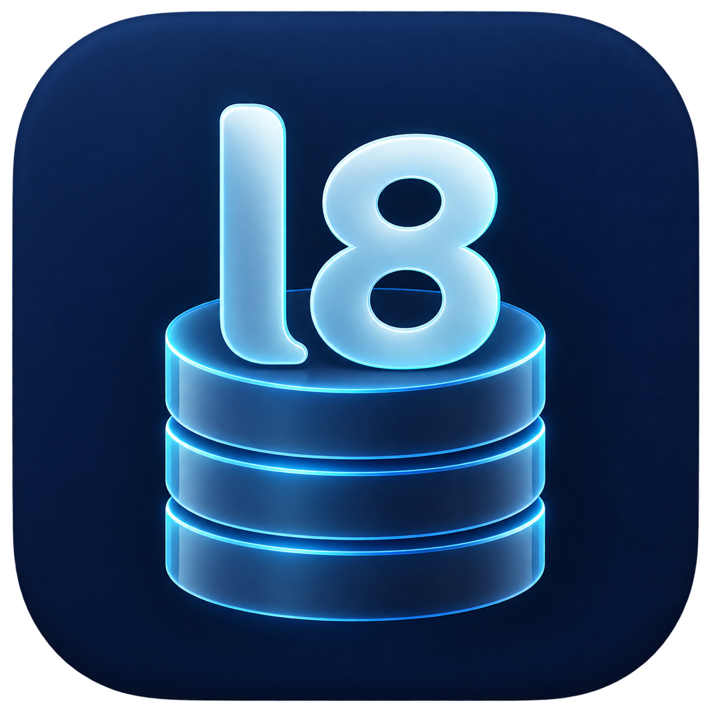
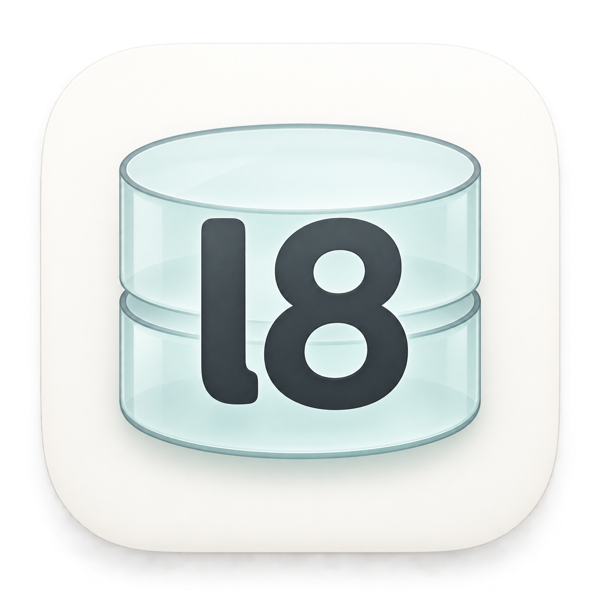
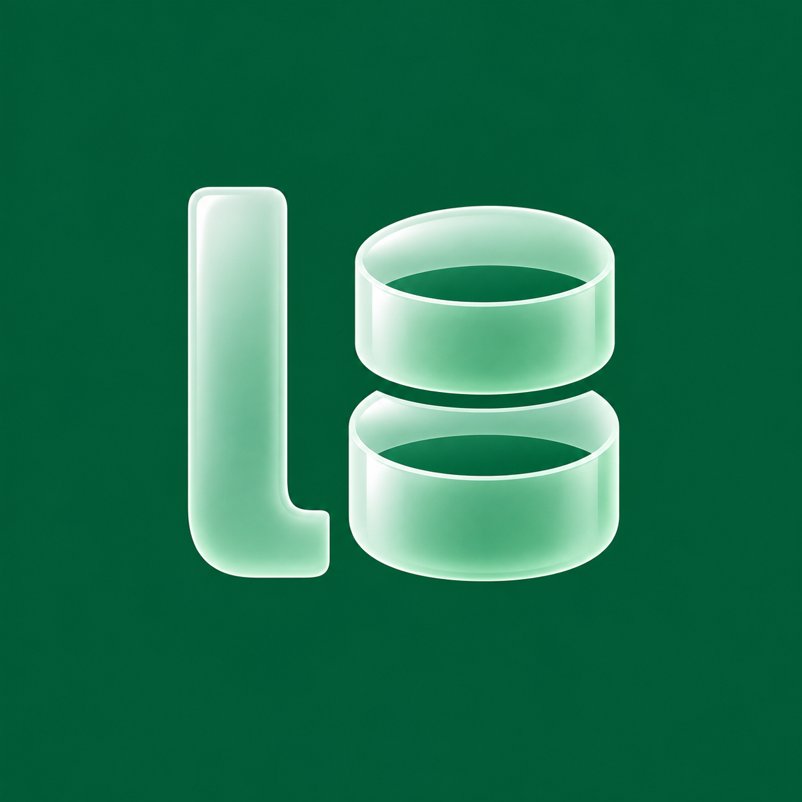
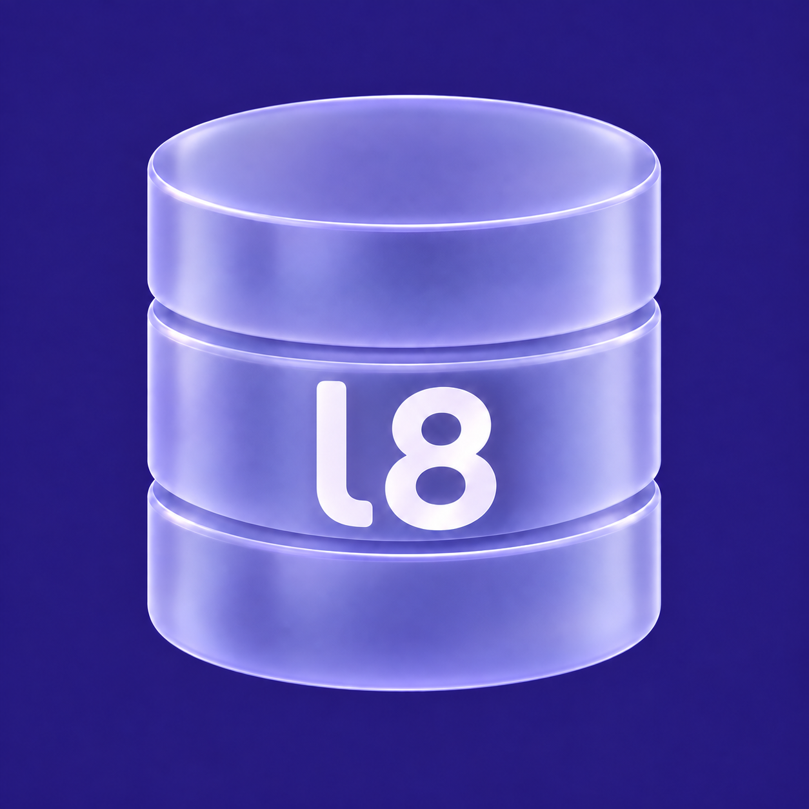
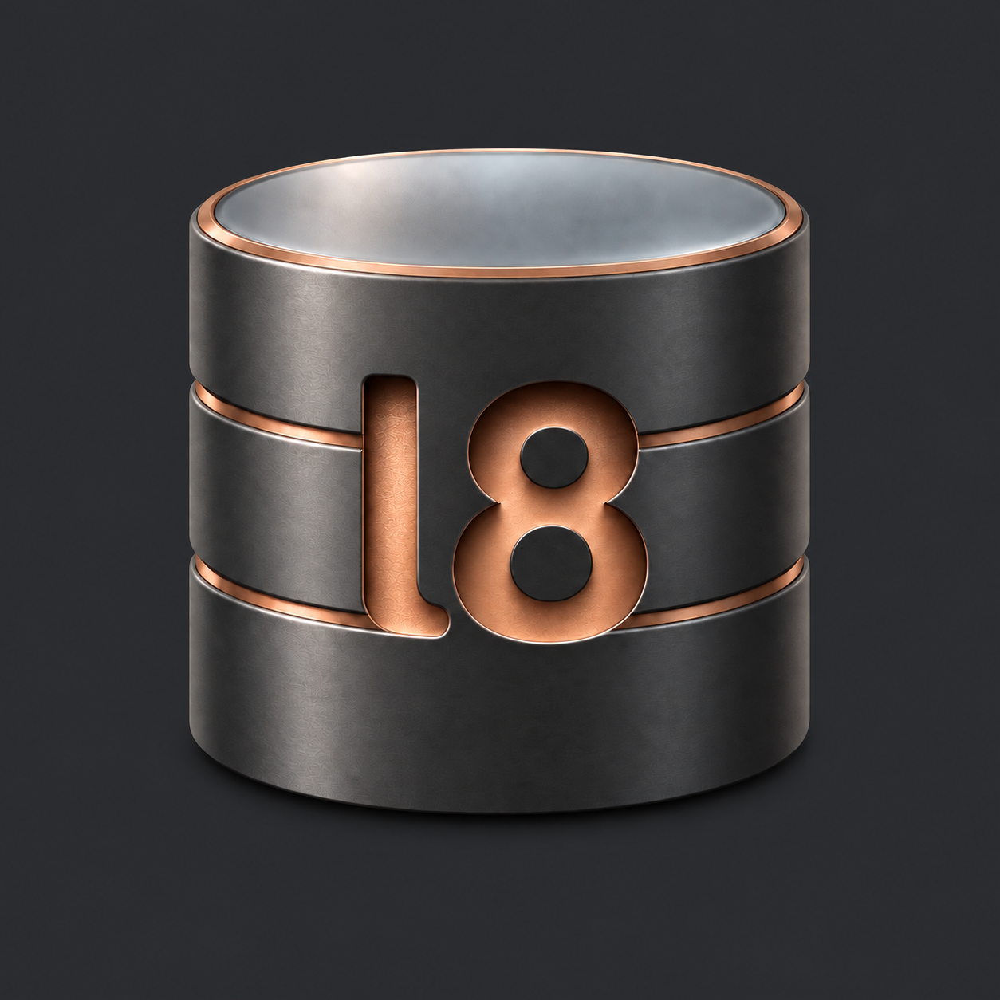

l8db · Neue App-Logo-Entwürfe
5 Konzepte · Bildgenerierung

Navy Glass
l8 auf einem Datenbankstapel

Frosted Light
Helles Glas mit dunklem l8

Glass Eight
Datenringe formen die 8

Violet Stack
l8 im gläsernen DB-Körper

Copper Cutout
l8 als Metall-Aussparung